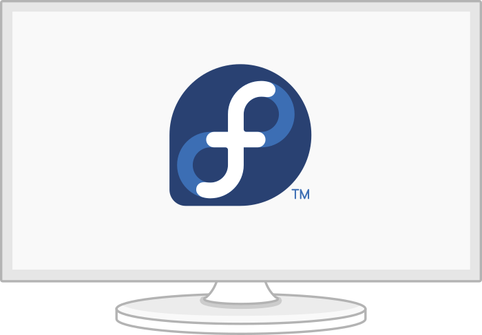

Открытость и независимость.
Fedora формирует современную, независимую платформу с открытым исходным кодом для оборудования, облаков и контейнеров, которая дает возможность разработчикам программного обеспечения и членам сообщества создавать индивидуальные решения для своих пользователей.
Официальная редакция
Fedora Workstation — это отточенная, легкая в использовании операционная система для переносных и настольных компьютеров с полным набором инструментов для разработчиков и производителей всех видов.
Официальная редакция
Fedora Server — мощная, гибкая операционная система, в которую вошли лучшие и самые новые технологии для центров обработки данных. Она дает вам контроль над всей вашей инфраструктурой и услугами.
Новые выпуски Fedora
Предварительный обзор будущего Fedora.
Fedora Silverblue - неизменяемая настольная операционная система, нацеленная на хорошую поддержку рабочих процессов, ориентированных на контейнеры.
Fedora IoT предоставляет проверенную платформу с открытым исходным кодом в качестве надежной основы для экосистем IoT.

Thunderbolt – how to use keyboard during boot time
January 24, 2020

Set up an offline command line dictionary in Fedora
January 22, 2020
Learning about Partitions and How to Create Them for Fedora
January 20, 2020
Смотреть еще статьи в Fedora Magazine »
Еще больше возможностей Fedora?
Если вы предпочитаете альтернативную среду, как, например, KDE Plasma Desktop или Xfce, вы можете загрузить сборку для вашей любимой рабочей среды и использовать её для установки Fedora, настроенной специально для выбранной вами среды.
Fedora Labs - это набор тщательно подобранных пакетов целевого программного обеспечения и контента, отобранных и поддерживаемых членами cообщества Fedora. Они могут устанавливаться в виде самостоятельной версии Fedora или как добавления к существующим установкам Fedora.
Альтернативные загрузки Fedora предназначены либо для специальных целей (для тестирования, для специфических архитектур), либо являются более стандартными версиями Fedora в альтернативных форматах, например, в формате установщика по сети или в формате для загрузки с помощью bittorrent.